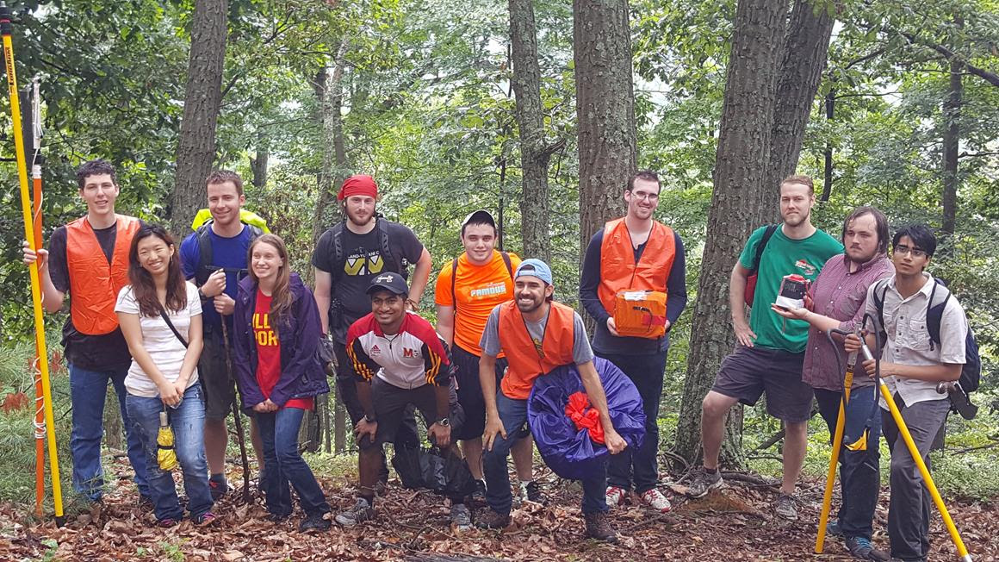

Posts
-
NS-59 Announcement
Our second launch of the semester is scheduled to take place on October 29, around 8:00 AM from Clear Springs, MD, weather permitting.
-
Ns 58 Launch_announcement
layout: post title: “NS-58 Launch Announcement” date: 2016-09-07 00:00:00 -0400 categories: NS-58
Fall semester has arrived! The first launch of the semester is scheduled to take place on September 17, around 8:00 AM from Clear Springs, MD, weather permitting.
The current payload lineup is Helios, an altitude control system, Command Module, the main tracking and telemetry system, Bach’s Box, the weather payload, IRENE, a radiation-measuring payload, SCORCH / MARS, two cut-down payloads, DataPigeon, a droppable data carrier, and Cloud360, a cloud-centric CapTech payload.
Join Us! Balloon Launch Details
When:
Saturday, September 17, 2016
Where:
Clear Spring Elementary School 12627 Broadfording Rd Clear Spring, Maryland 21722
Questions?
Contact Dr. Mary Bowden
Email: bowden@umd.edu
Phone: (301) 275-7723
Live Updates
You can follow our live tweetup of the launch day here.
You can also track us on the APRS website using UMD’s callsign: W3EAX-8.
The NearSpace High Altitude Balloon Team thanks the Maryland Space Grant for its continued support and effort to make our program possible.
-
Ns 57 Launch_results
layout: post title: “NS-57 Launch Results” date: 2016-08-13 00:00:00 -0400 categories: NS-57
There’s little the team wouldn’t do for the Nearspace program (including climbing a steep 250-foot hill in the rain!) and on Saturday, July 30, 2016, the team was put to the test.

Trekking up a 250 foot hill to recover the payloads.
NS-57 began a little earlier than the typical launch. There were some predictions for rain later in the afternoon so as a result, the team left the SSL parking lot at 4:00 AM, skipping the traditional McDonalds breakfast visit.
Learning from NS-56, the team decided to do a Balloon Launch Tube (BLT) hybrid launch to measure the lift in the 3000g balloon before launching. Unfortunately, after measuring the lift, the team had to make an executive decision to remove HABScope in order to ensure a successful flight. The current hypothesis as to why we did not develop enough lift is that there might have been some leakage in the filling process. After release, the balloon rose at a respectable 5 m/s.
Chase and Recovery
Graphic courtesy of Zach BurnettAnd… we have launch! The balloon took off from Clear Springs, Maryland and headed north into Pennsylvania. Rising to a final altitude of about 103’000 feet, the balloon popped around Greencastle, Pennslyvania, landing in Michaux State Forest.
Recovering the balloon brought a couple challenges of its own. While the tracking team roughly pinpointed the balloon’s location, the team had to load up the radios to get a better location of the payload string. About a mile later, the team was able to get radio contact with the payloads and homed in on their location using the trails to get as close as possible.
Retrieving the payloads required about a couple miles of bush-whacking through rain, lightning, steep terrain, and thick underbrush, but the team (and the payloads) all made it back safely if somewhat wet. Based on a recommendation from Ranger Ted Ottinger, who was helping us, the team then enjoyed a well-deserved lunch at the Flamingo Restaurant right outside the state park.
Photos!
 A photo of the NS-57 team after getting hit by a rainstorm accompanied by ranger Ted (far left).
A photo of the NS-57 team after getting hit by a rainstorm accompanied by ranger Ted (far left).All photos below are from Tyrion.
On the Launch Pad
At 102’000 feet!
Descent.
-
Countdown to NS-57
Well folks, its almost time for NS-57! The payloads are busy being tested to ensure they’ll perform in the extreme flight environment they’ll be subjected to. This flight we have the following payloads on the lineup:
-
NS-56 Results - Low Altitude Flight!
Sometimes, not everything goes according to plan and NS-56 is evidence of just that.
subscribe via RSS